Forecast Wape Vs Simple Baseline
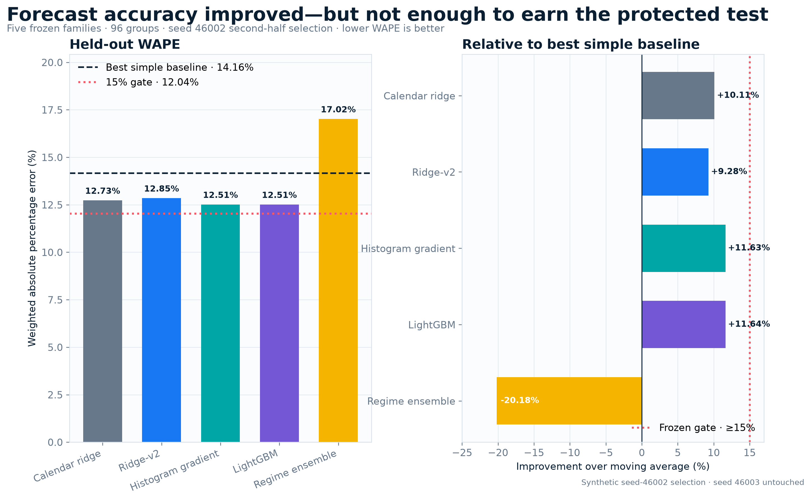
Event Peak Underprediction
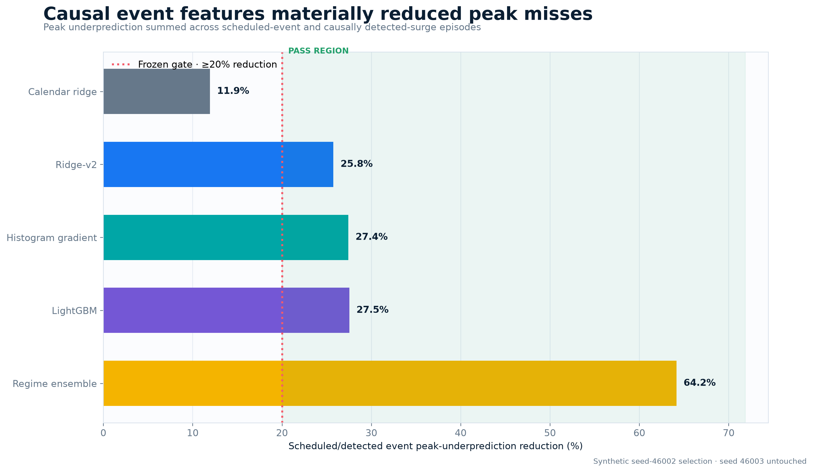
P90 Coverage Calibration
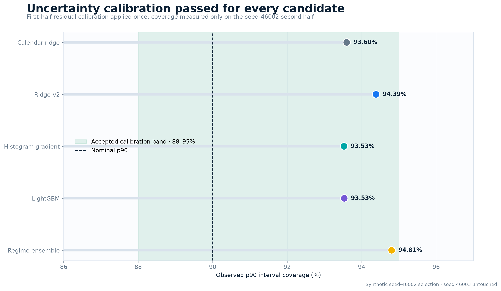
Worst Slice Guardrail
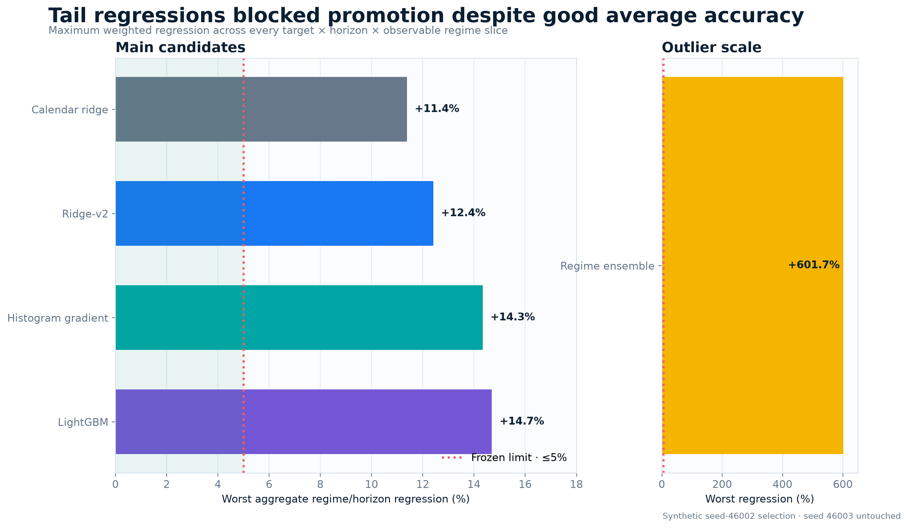
Fail Closed Gate Scorecard
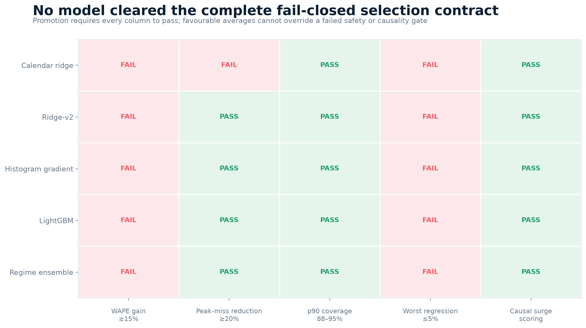
Wape Improvement By Regime
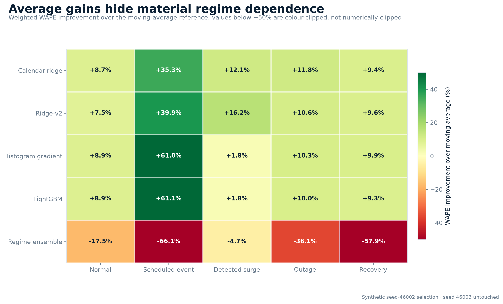
Wape Improvement By Horizon
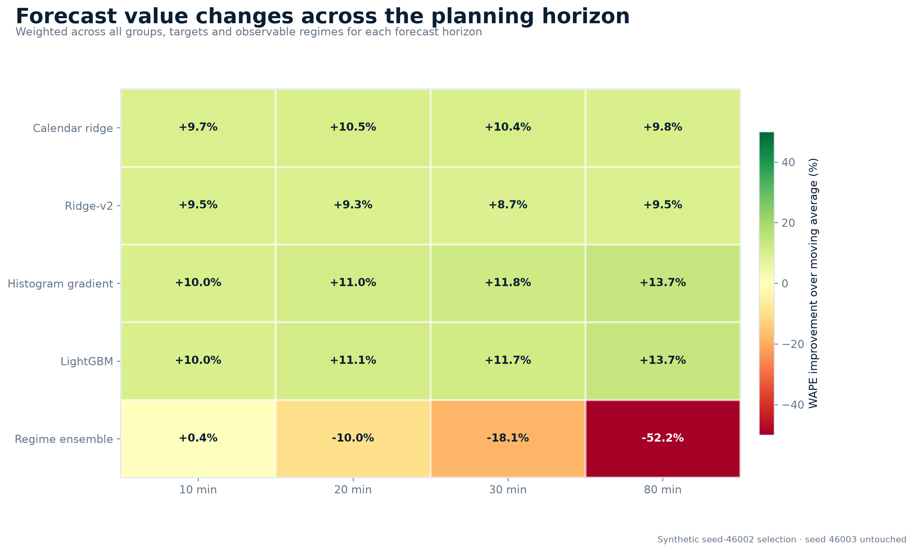
Causal Unknown Surge Observability
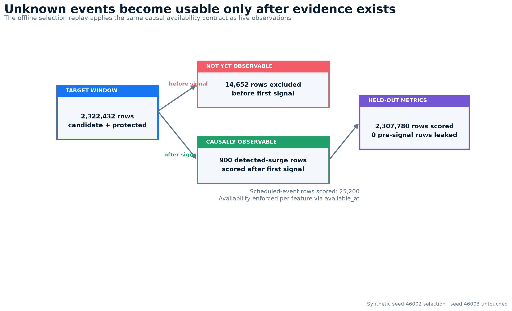
Phase1 Plumbing And Reproducibility
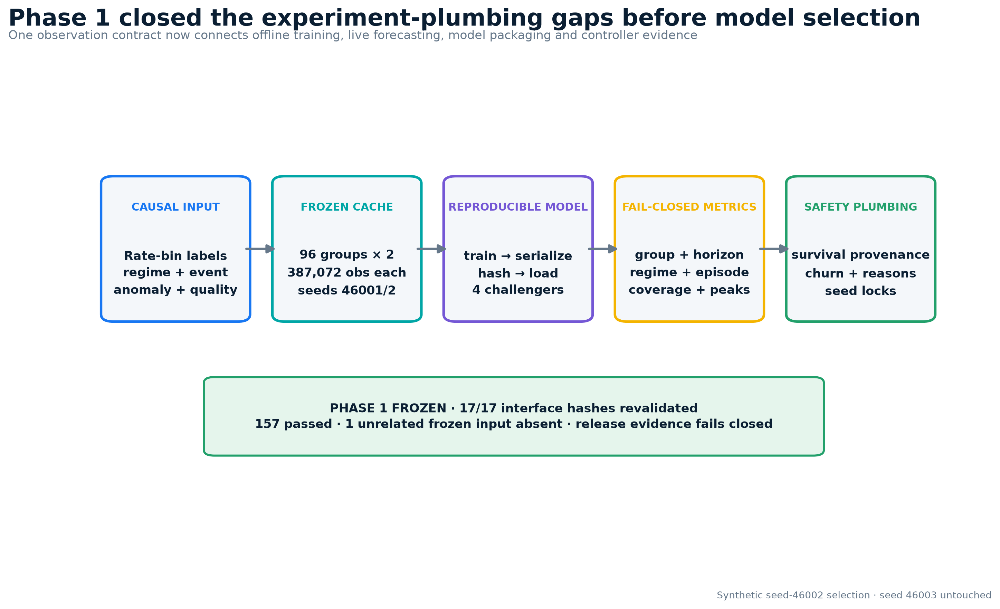
Cluster Campaign And Artifact Scale
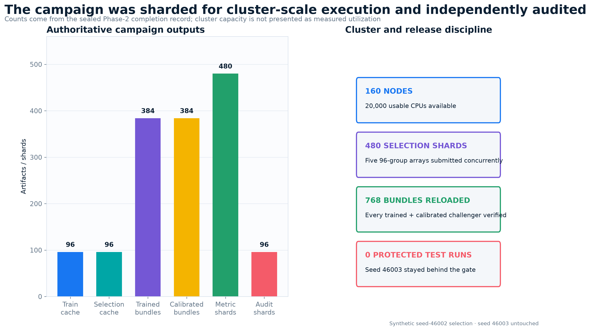
Guarded Hybrid Architecture
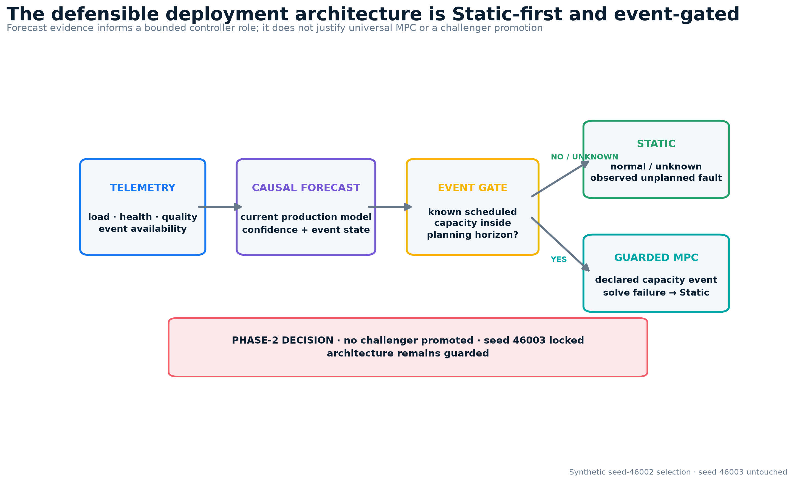